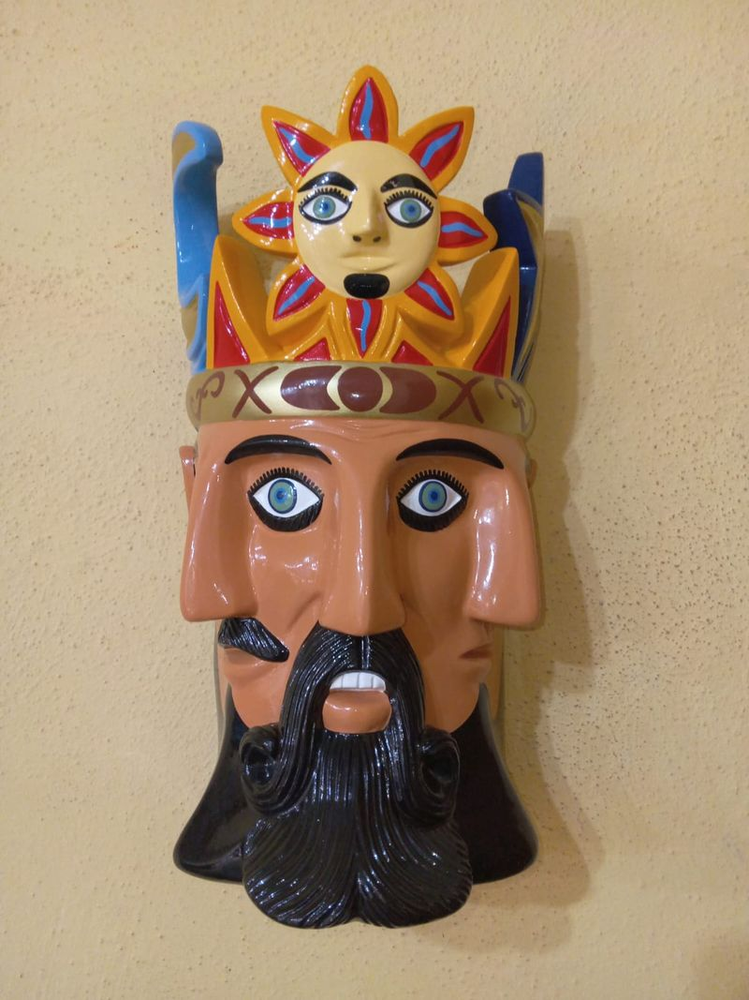

Prueba de diseño
Acercamiento al hacer scroll
Al bajar, la máscara empieza como una tarjeta y crece hasta su tamaño completo; después aparece lo que dice Don Gorgonio de ella.

Máscara de adorno
El Tiempo
Tres rostros que comparten los mismos ojos. Según Don Gorgonio, representa las tres etapas de la vida: niño, adulto y viejo.
Después del acercamiento
Aquí seguiría el resto de la página. En el sitio, este efecto podría ir entre la portada y «El maestro», o abrir la galería.